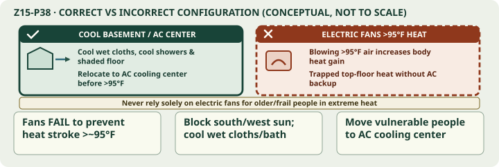

Z15-P38 · Disaster scenarios · New manuscript
Manage home cooling during extreme heat waves and recognize electric-fan limits
Prevent false reliance on electric box fans at extreme indoor temperatures and use safe low-energy cooling strategies during grid brownouts.
When it applies · Un-air-conditioned homes, apartments, and summer power outages during Excessive Heat Warnings.
Equipment · Indoor thermometer, cool damp cloths/cool showers, blackout window shades, and verified AC cooling-center locations.

Actions
- Understand the critical CDC/FEMA electric fan limit: electric fans move air to evaporate sweat in moderate heat, BUT when indoor air climbs into extreme heat ranges (above roughly 95°F) with high humidity, blowing superheated air directly onto skin can actually INCREASE heat gain rather than cool the body—never rely on fans as your primary heat-wave defense![D09, E08]
- During summer outages or non-AC heat waves, move to the coolest lowest shaded floor (such as a dry basement), block direct sunlight on south/west glass with curtains or reflective shades, take cool showers/baths or drape cool damp cloths across neck, wrists, and torso, and eat light no-cook meals.[D09, E19]
- Preserve grid stability safely when utilities issue conservation appeals only within safe indoor temperatures—never turn AC off for frail, elderly, or heat-vulnerable household members during Excessive Heat Warnings.[D09, T10]
Failure recognition · Leaving a frail older adult in a 98°F closed apartment with a single oscillating floor fan believing the moving air prevents heat stroke.[D09, E08]
Verify · Confirm real indoor temperature measured, fans NOT relied upon above ~95°F, cool-cloth/basement cooling used, and AC shelter plan active.[D09]
Stop or change course · Indoor air climbing past safe comfort toward 90–95°F without AC requires moving vulnerable occupants immediately to public air-conditioned spaces.[D09, U17]
Evidence and editorial notes
- D09 · FEMA / Ready.gov · Extreme Heat (current web edition)
- Section: Extreme Heat Waves, Heat Domes, and Power-Outage Cooling Plans · Conditions: Prolonged heat advisories, excessive heat warnings, and grid-strain brownouts
Support: Identify public cooling centers and air-conditioned backup locations ahead of heat waves, check twice daily on older adults/children/chronically ill neighbors, block solar gain through windows, never leave people or pets in parked vehicles, and activate 911 immediately for heat stroke.
Limitations: Electric fans alone do not prevent heat illness when indoor air temperatures climb into extreme heat ranges (above ~95°F) with high humidity. · Conflicting evidence: None; aligns with CDC-HEAT, E08, E19, and T09.
Editorial note: Anchors urban/rural heat-wave resilience and vulnerable-neighbor checks. · Specialist reviewer: Public health and emergency medicine
Primary source · checked 2026-11-24 - E08 · CDC · About Heat and Your Health (current web edition)
- Section: Protect yourself from heat · Conditions: Outdoor activity in hot conditions
Support: Limit exertion in hot periods, take breaks in cooler places and monitor for illness.
Limitations: High humidity reduces sweat evaporation and raises heat strain at lower air temperatures. · Conflicting evidence: None; aligns with NWS-HEAT and NIOSH-H.
Editorial note: Anchors shade, pacing, and hot-weather shelter selection. · Specialist reviewer: Heat illness and emergency medicine
Primary source · checked 2026-11-24 - E19 · NWS · Heat Safety (current web edition)
- Section: Heat Safety > Heat Index and Shade · Conditions: High temperature and humidity outdoors
Support: Shade lowers radiant solar heat load while airflow aids evaporative cooling; enclosed unventilated tents trap solar heat far above ambient air temperature.
Limitations: High ambient humidity limits evaporative cooling even in shade. · Conflicting evidence: None; aligns with CDC-HEAT and READY-HEAT.
Editorial note: Drives warm-weather tarp/shade configuration and ventilation cards. · Specialist reviewer: Heat safety and shelter design
Primary source · checked 2026-11-24 - T10 · FEMA / Ready.gov · People with Disabilities (current web edition)
- Section: People with Disabilities > Make a Plan and Build a Kit · Conditions: Individuals with mobility, sensory, medical, or power-dependent access and functional needs
Support: Build a personal support network, plan accessible evacuation transport, register voluntarily with local emergency registries where available, and plan backup power and spare supplies for medical devices, medications, and service animals.
Limitations: Local registry availability and utility priority-restoration policies vary by jurisdiction. · Conflicting evidence: None; extends generic preparedness plans to accessible requirements.
Editorial note: Directly addresses Z01 accessible emergency planning requirement. · Specialist reviewer: Accessible emergency management and disability preparedness
Primary source · checked 2026-11-24 - U17 · FEMA / Ready.gov · Evacuation (current web edition)
- Section: Household Evacuation Thresholds When Utilities Fail · Conditions: Uninhabitable indoor temperatures, sewage backup, persistent CO alarm, or structural/utility hazard
Support: Establish clear pre-agreed exit triggers to relocate to a warming center, hotel, or relatives BEFORE indoor freezing, carbon monoxide alarms, medical-device battery exhaustion, or impassable blizzard roads trap occupants.
Limitations: Waiting until indoor pipes burst or batteries hit zero removes safe travel options. · Conflicting evidence: None; aligns with T13 and E14.
Editorial note: Defines objective household abandonment thresholds in Z13. · Specialist reviewer: Emergency management and cold-weather operations
Primary source · checked 2026-11-24
Source lineage · FEMA Extreme Heat and CDC Heat Health; new manuscript · Classification · New manuscript.